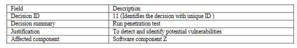
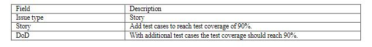

a checklist of QRs, along with detailed instructions for documenting and managing them, can help minimize issues arising from communication gaps among ASD team members (Behutiye et al., 2020c)
Practice documenting quality targets and decisions regarding QR tasks. Teams document either their decisions on QRs, or the quality target of the QR. This is especially useful for small teams that work collaboratively and rely on face-to- face communication and white-board discussions when documenting and managing QRs (Behutiye et al., 2020c). For instance, QR decision regarding security QR of software can be documented as follows together with the justification of the QR decision, decision Id and the affected software component.
teams should document QRs early in the development process, along with the functional requirements. Specifications of QRs should be brief, clear, meaningful, and testable. This approach helps minimize the likelihood 17 of communication gaps occurring among team members and affecting the documentation and implementation of QRs. For instance, we can specify testability QR at story level as follows.
Establishing a process to document and manage QRs mitigates challenges that may arise due to communication gaps. ASD teams can adopt a process to guide their members on documenting and managing QRs